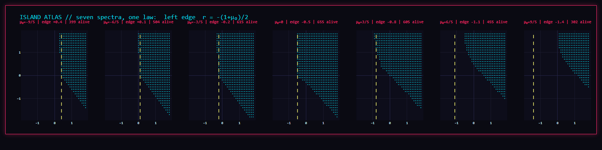
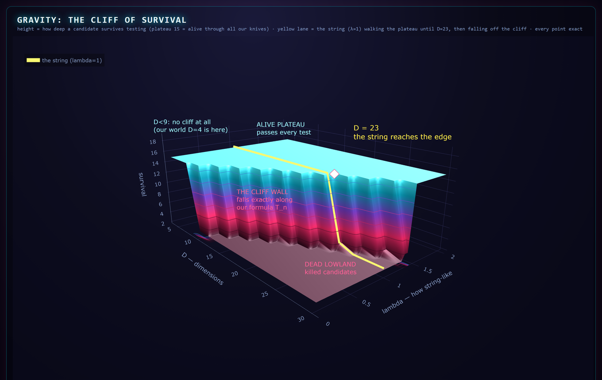
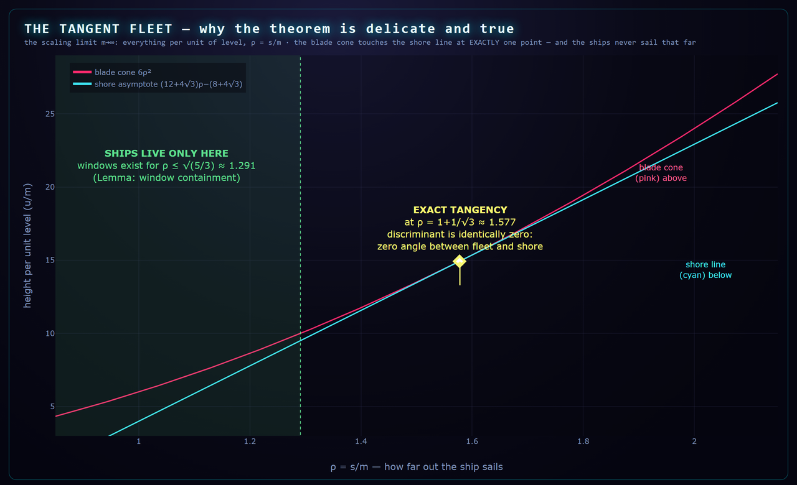

Чем мы занимались этим летом. История про струну, остров и число четыре пятых
Это рассказ для семьи и друзей. Без формул, зато с картинками и двумя роликами. Про то, как один человек с искусственным помощником целое лето задавал природе один вопрос, и что из этого получилось на сегодняшний день, 3 сентября 2026 года.
Андрей Плужник, с лабораторией. Всё, что написано ниже как «доказано», лежит в открытом доступе с датой и номером, ссылки в конце.
ГЛАВА 1Один вопрос, на который никто не знает ответа
Есть две самые проверенные теории в физике. Одна описывает всё большое: планеты, звёзды, чёрные дыры. Это гравитация Эйнштейна. Другая описывает всё маленькое: атомы, частицы, свет. Это квантовая механика. Каждая работает безупречно на своей половине мира. Но когда их пытаются соединить, формулы ломаются. Сто лет лучшие умы ищут, как их подружить.
Самый известный кандидат на роль «клея» называется теорией струн: идея, что самые маленькие частицы на самом деле не точки, а крошечные вибрирующие струны, как на гитаре. Разные ноты этой струны и есть разные частицы. Красиво, но доказать, что мир именно такой, никто не смог.
Наш вопрос был скромнее и честнее. Не «правда ли, что мир из струн», а вот какой:
Это вопрос про границы дозволенного. Не «как устроен мир», а «как он точно не может быть устроен». Такие вопросы в физике часто оказываются самыми полезными: они сужают поле поиска.
ГЛАВА 2Остров
В 2024 году трое физиков из Америки (Чун, Хиллман и Реммен) предложили «ручку настройки»: формулу, в которой три числа можно крутить, и при одних значениях получается ровно струна, а при других что-то на неё похожее, но другое. Вопрос: при каких значениях этих трёх чисел получается что-то физически возможное?
Ответ оказался географическим. Если нарисовать карту всех возможных настроек, то допустимые занимают на ней небольшой остров, а вокруг океан невозможного: там вероятности становятся отрицательными, а отрицательной вероятности в природе не бывает. Струна стоит на этом острове.
Но остров был известен только как результат перебора: компьютер проверил много точек и закрасил, где можно. Никто не знал точной формы его берегов. А мы нашли формулы этих берегов. Не приблизительно, а точно: край острова описывается законом, который можно записать одной строкой.

ГЛАВА 3Берег, ножи и первая теорема
Дальше события пошли быстро. За три дня в середине августа появились три работы подряд.


ГЛАВА 4День, когда мы ошибались продуктивно
17 августа стоит отдельно. За один день задача уменьшилась в десять раз, а пять наших собственных ошибок были пойманы до того, как вышли наружу. Одна из них на пару часов выглядела как крушение главной теоремы. К вечеру у недостающей математики появилось имя.
Мы записали этот день как есть, неотполированным, и опубликовали как лабораторную заметку. Потому что в этой лаборатории действует одно жёсткое правило:
Это не украшение. 1 сентября одно утверждение, у которого была сильная числовая поддержка, оказалось ложным: пять чисел ломают его, дважды, и мы это опубликовали как отдельную заметку. Ошибки здесь не прячут, их публикуют с датой.
ГЛАВА 5Четыре пятых
А теперь главное событие сентября. Оно про Ньютона.
В 1707 году Ньютон доказал, что если взять любой список положительных чисел и построить из него определённую «лестницу», то у этой лестницы никогда не будет вмятины: каждая ступенька не ниже, чем полагается по соседям. Триста лет это неравенство служит математикам. Но Ньютон сказал «не ниже». Он не сказал, насколько выше. На сколько ступенька всегда выступает над «полом»?
Для большинства списков ответа нет и, наверное, не будет. Но нам нужен был один конкретный список: тот самый, который решает, остаётся ли деформированная струна физически возможной. Это список нечётных квадратов: 1, 9, 25, 49, каждый взятый дважды. Именно он управляет островом из второй главы. И для него ответ нашёлся.
4/5
Ступенька всегда выступает над полом больше чем на четыре пятых. Никогда меньше. И это число нельзя улучшить: лестница подходит к нему сколь угодно близко, но не касается. Оказалось, что четыре пятых это «собственное» число этого списка: разброс нечётных квадратов относительно их среднего. Список сам знает свой порог.
Доказательство собрано из пяти частей, проверенных машиной: лестница из 627 точных сертификатов и три аналитических сертификата. Каждую часть заново вывел независимый проверяющий, который не видел исходного кода. Внутри нет ни одного «примерно»: каждая погрешность это точный интервал с доказанными концами.

И по дороге случилось то, что в науке случается редко. Тем же методом мы посмотрели на самый классический список на свете: 1, 2, 3, 4 и так далее. Для него точный «выступ над полом» угадал в 1988 году японский статистик Масааки Сибуя. Записал в статье одной строкой как предположение. И за тридцать восемь лет ни один человек на эту строку не сослался. Мы её нашли, доказали над большей частью области, и честно записали, где именно наше доказательство останавливается: один угол остаётся открытым, и его точная форма опубликована.
ГЛАВА 6Куда это ушло из нашей комнаты
Результат, который лежит на компьютере, науке не принадлежит. Поэтому 3 сентября был длинный день.
- Пакет выложен. Код, каждый журнал прогона, оба «злых» разбора и статья лежат в открытом доступе на GitHub. У архива есть постоянный номер (DOI 10.5281/zenodo.22282840): это как ISBN у книги, дата и авторство зафиксированы навсегда.
- Статья подана в журнал. Electronic Journal of Combinatorics, один из основных математических журналов по этой теме. Теперь её будет читать живой рецензент, человек, которого мы не знаем. Это единственная проверка, которую нельзя сделать самим. Ответа ждём недели, полный путь до публикации обычно полгода.
- Двенадцать писем учёным. Тем, кто занимается ровно этими вопросами: физикам, чья «ручка настройки» породила остров, и математикам, изучающим такие неравенства. Каждому своё письмо, про его тему, вежливо, с одним вопросом.
- Два ответа в первый же вечер. Профессор из Мюнстера: о гипотезе Сибуи не знал, помочь не может. И профессор Брюс Саган из Мичигана, один из главных людей в этой области: о гипотезе тоже не знал, «и, судя по вашему поиску, не я один». И подарил идею, как можно подступиться к открытому углу, приложив свою статью 1988 года. Так и работает наука: незнакомый человек на другом конце света отвечает через четыре часа и даёт подсказку.

ГЛАВА 7Что дальше
Физика. Ради неё всё и делалось
Число четыре пятых было той самой недостающей деталью, которую программа ждала с августа. Теперь его надо «прочитать назад» на карте острова: превратить «мы проверили много точек» в «граница острова здесь, и это доказано для всех точек сразу». Если цепочка замыкается так, как выглядела в августе, это статья за две-четыре недели. Первым делом, уже сегодня ночью, записывается точная постановка: что из 4/5 следует, что нет, и какой первый расчёт это решает.
Угол Сибуи. Нужна идея, а не компьютер
Открытый угол гипотезы 1988 года не берётся счётом: там обе стороны неравенства совпадают в главном порядке, и любой прибор слепнет. Нужна новая мысль. Сегодня вечером одна появилась извне: Саган предлагает искать не аналитическое, а комбинаторное доказательство, где неравенство становится пересчётом предметов. Начнём с этого.
Что честно надо сказать
«Доказано» выше означает: прошло все наши автоматические проверки и двух независимых рецензентов внутри лаборатории. Слово «доказано» от имени науки скажет журнал, когда его рецензент закончит. До тех пор это препринт с датой и открытым кодом, который любой может перепроверить. Мы не учёные по званию. Мы люди, которые очень аккуратно считают, честно записывают ошибки и хотят влиться в это сообщество, а не ворваться в него.
ЭПИЛОГПочему это романтично
Потому что вопрос настоящий. Не «как заработать» и не «как обогнать», а «как устроен мир и где у него границы». Потому что ответ на него частично получен в обычной комнате, обычным человеком, за одно лето, с помощником, которому запрещено себе верить. Потому что ошибки здесь не стыд, а дневник. И потому что в первый же вечер на письмо ответил человек с другого континента, не зная нас, просто потому что вопрос ему тоже интересен.
Струна стоит ровно на краю острова. Лестница Ньютона никогда не опускается ниже четырёх пятых. И то и другое было правдой всегда. Просто теперь это записано.
Даты: остров 14 августа, берег и формула ножей 15 августа, теорема о лезвиях 16 августа, день ошибок 17 августа, опровергнутое утверждение 1 сентября, порог 4/5 и гипотеза Сибуи 3 сентября, подача в журнал и письма 3 сентября 2026. Ролики сделаны в нашем движке в августе. Страница не индексируется поисковиками и не связана с главной; делитесь ссылкой сами.